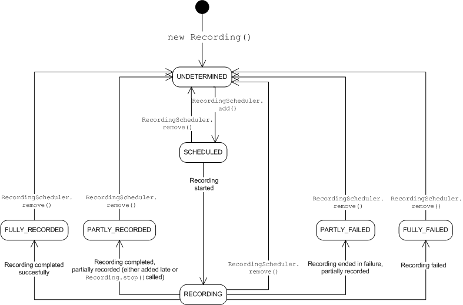

javax.microedition.broadcast.recording.Recording
javax.microedition.broadcast.recording.Recording
|
Copyright 2008 Motorola Inc. and Nokia Corporation. All Rights Reserved. Specification License |
||||||||
| PREV CLASS NEXT CLASS | FRAMES NO FRAMES | ||||||||
| SUMMARY: NESTED | FIELD | CONSTR | METHOD | DETAIL: FIELD | CONSTR | METHOD | ||||||||
java.lang.Object
public class Recording
Represents an individual recording. A Recording has a state that tells e.g.
if the recording has been scheduled or if it has already ended. The diagram below depicts the state transitions
in the normal case. For clarity, the state names are missing the prefix STATE_.

A Recording implements the javax.microedition.media.Controllable
interface to be able
to return AudioFormatControl, VideoFormatControl and
ContainerFormatControl from JSR-234
for specifying the recording format. If the implementation does not support transcoding
from the broadcast format to some other format for storage, no these Controls are
returned. If one of these Controls is supported, all of them must be supported.
If these FormatControls are supported, their parameters are taken in the account in
the beginning of the recording; these Controls cannot be used to transcode already recorded content.
| Field Summary | |
|---|---|
static int |
STATE_FULLY_FAILED
The Recording has failed completely. |
static int |
STATE_FULLY_RECORDED
The Recording has successfully completed. |
static int |
STATE_PARTLY_FAILED
The Recording has failed partially. |
static int |
STATE_PARTLY_RECORDED
The Recording has happened successfully, but it
was added to the RecordingScheduler
after it had already started (but still before it had ended)
or it was stopped during the recording. |
static int |
STATE_RECORDING
The Recording is happening at the moment. |
static int |
STATE_SCHEDULED
The Recording has been added to the scheduler, but the actual recording
has not started yet. |
static int |
STATE_UNDETERMINED
The Recording has been constructed, but it has not been scheduled (yet)
OR it has been recorded, but it has been deleted from the storage after
that (using RecordingScheduler.remove method). |
| Constructor Summary | |
|---|---|
Recording(ProgramEvent program,
int startOffset,
int endOffset)
Creates a new recording and selects the default ServiceComponents to it. |
|
Recording(Service service,
java.util.Date startTime,
java.util.Date endTime,
java.lang.String programName)
Creates a new recording and selects the default ServiceComponents to it. |
|
| Method Summary | |
|---|---|
javax.microedition.media.Control |
getControl(java.lang.String controlType)
Obtain a javax.microedition.media.Control defined in JSR 135 or
JSR 234 given the class type. |
javax.microedition.media.Control[] |
getControls()
Obtain the all the controls applicable to this recording. |
int |
getEndOffset()
Returns the end offset. |
java.util.Date |
getEndTime()
Gets the end time of the recording (including possible end offset). |
ProgramEvent |
getProgram()
Returns the program. |
java.lang.String |
getProgramName()
Gets the name of the program. |
java.lang.String |
getServiceName()
Gets the name of the service the program belongs to. |
int |
getStartOffset()
Returns the start offset. |
java.util.Date |
getStartTime()
Gets the start time of the recording (including possible starting offset). |
int |
getState()
Returns the current state of the recording. |
java.lang.String |
getURL()
Returns the locator for the recording. |
void |
stop()
Stops the recording asynchronously. |
| Methods inherited from class java.lang.Object |
|---|
clone, equals, finalize, getClass, hashCode, notify, notifyAll, toString, wait, wait, wait |
| Field Detail |
|---|
public static final int STATE_FULLY_FAILED
Recording has failed completely. No recording exists
in the storage in this state.
public static final int STATE_FULLY_RECORDED
Recording has successfully completed. The program exists in the storage
fully in this state.
public static final int STATE_PARTLY_FAILED
Recording has failed partially. A part of the recording
has succeeded and saved in the storage in this state.
public static final int STATE_PARTLY_RECORDED
Recording has happened successfully, but it
was added to the RecordingScheduler
after it had already started (but still before it had ended)
or it was stopped during the recording. The
program exists partially in the storage in this state.
public static final int STATE_RECORDING
Recording is happening at the moment.
public static final int STATE_SCHEDULED
Recording has been added to the scheduler, but the actual recording
has not started yet.
public static final int STATE_UNDETERMINED
Recording has been constructed, but it has not been scheduled (yet)
OR it has been recorded, but it has been deleted from the storage after
that (using RecordingScheduler.remove method).
| Constructor Detail |
|---|
public Recording(ProgramEvent program,
int startOffset,
int endOffset)
program - The program to record.startOffset - Specifies how much earlier in seconds the recording
starts compared to the start time in the program guide. If the implementation
can detect the exact start time of the program, this parameter is ignored.endOffset - Specifies how much later in seconds the recording ends
compared to the end time in the program guide. If the implementation can
detect the exact end time of the program, this parameter is ignored.
java.lang.IllegalArgumentException - Thrown if the program has ended already
or if it doesn't exist or if it doesn't provide start and stop times.
UnsupportedOperationException - Thrown if the scheduled recording is not
supported by the implementation at all.
java.lang.NullPointerException - if the given program is null
public Recording(Service service,
java.util.Date startTime,
java.util.Date endTime,
java.lang.String programName)
service - The service to record.startTime - Specifies the start time for the recording.endTime - Specifies the ending time for the recorfing.programName - This name is returned with getProgramName method.
The name is not used for other purposes.
java.lang.IllegalArgumentException - Thrown if the service doesn't exist, if the endTime has already passed,
or if the startTime is greater or equal than endTime.
UnsupportedOperationException - Thrown if the scheduled recording is not
supported by the implementation at all.
java.lang.NullPointerException - if any of the given parameters is null| Method Detail |
|---|
public javax.microedition.media.Control getControl(java.lang.String controlType)
javax.microedition.media.Control defined in JSR 135 or
JSR 234 given the class type. The following JSR 234 controls are applicable:
getControl in interface javax.microedition.media.ControllablecontrolType - The fully-qualified class name of the requested Control.
Control; or null
if the specified Control interface is not supported.public javax.microedition.media.Control[] getControls()
getControls in interface javax.microedition.media.Controllablepublic int getEndOffset()
public java.util.Date getEndTime()
public ProgramEvent getProgram()
java.lang.IllegalStateException - Some implementation might not have the ProgramEvent
in memory anymore if long time has passed since the recording. In those cases
this exception can be thrown in states STATE_FULLY_RECORDED, STATE_PARTLY_RECORDED,
STATE_PARTLY_FAILED, STATE_FULLY_FAILED or STATE_UNDETERMINED. This exception is never thrown
in other states if Recording(ProgramEvent program, int startOffset, int endOffset)
constructor was used. If the object was instantiated with
Recording(Service service, Date startTime, Date endTime) constructor, this
IllegalStateException is always thrown.public java.lang.String getProgramName()
public java.lang.String getServiceName()
public int getStartOffset()
public java.util.Date getStartTime()
public int getState()
public java.lang.String getURL()
java.lang.IllegalStateException - Thrown if the Recording is not either in
the STATE_FULLY_RECORDED, STATE_PARTLY_RECORDED, STATE_PARTLY_FAILED or STATE_RECORDING state.public void stop()
STATE_RECORDING state, the method is ignored.
When stopped, RecordingSchedulerListener.stateChanged(Recording, int)
will be called and
the Recording will go to STATE_PARTLY_RECORDED state.
|
Copyright 2008 Motorola Inc. and Nokia Corporation. All Rights Reserved. Specification License |
||||||||
| PREV CLASS NEXT CLASS | FRAMES NO FRAMES | ||||||||
| SUMMARY: NESTED | FIELD | CONSTR | METHOD | DETAIL: FIELD | CONSTR | METHOD | ||||||||